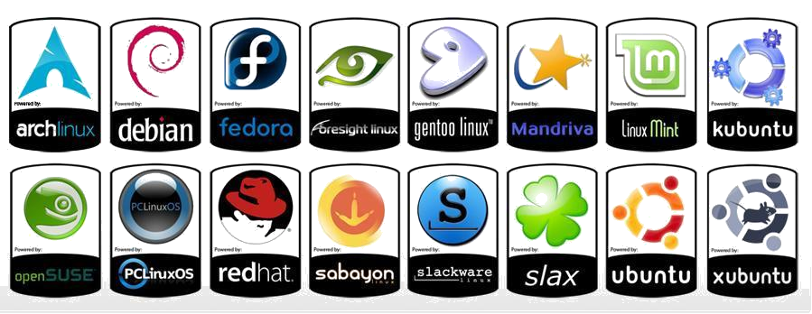

Linux
Linux je operacijski sustav nastao 1991. godine, a njegov tvorac je Linus Torvalds prema kojem sustav i nosi ime. Linus je javno objavio izvorni kod te pozvao zainteresirane da se uključe u njegov daljnji razvoj što su mnogi i prihvatili stoga se za linux može reći da je djelo programera i hakera cijelog svijeta. U početku su s linuxom eksperimentirali većinom studenti, hakeri i ljudi zainteresirani za nešto novo u domeni računalnih sustava. Nešto kasnije to se mijenja nastankom Apache Web Servera koji u kombinaciji s linuxom nudi dobro, a besplatno rješenje za pogon web stranica. Zbog toga je linux potisnuo druge slične sustave pa čak i Windows NT sa tržišta servera.
Linux je još i danas relativno rijetka pojava na osobnim računalima iako je besplatan i sadrži i više nego što je prosječnom korisniku potrebno, a također i sigurniji sustav jer većina virusa, špijunskih i oglašivačkih softvera ne radi na linuxu, a tome pripomaže i njegov dizajn i prateći softver. Još jedna odlika linuxa je njegova stabilnost za što je zaslužan dizajn jezgre koja omogućuje zaustavljanje i ponovno pokrećanje sistema pa kod instalacije nečega nije potrebno raditi restart računala, već se samo očitava modul i ponovno pokreće grafički podsustav. Postoji mnoštvo linux distribucija, a najpopularnije među njima su Ubuntu, Debian, Fedora itd. Ipak najrašireniji je Ubuntu koji je baziran na Debianu. Još jedna zanimljiva činjenica je da se popularni android uređaji koji nastaju od 2007. godine temelje na jezgri linuxa.
